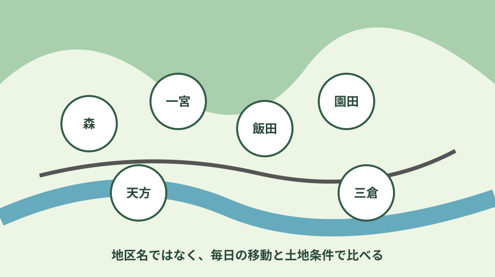
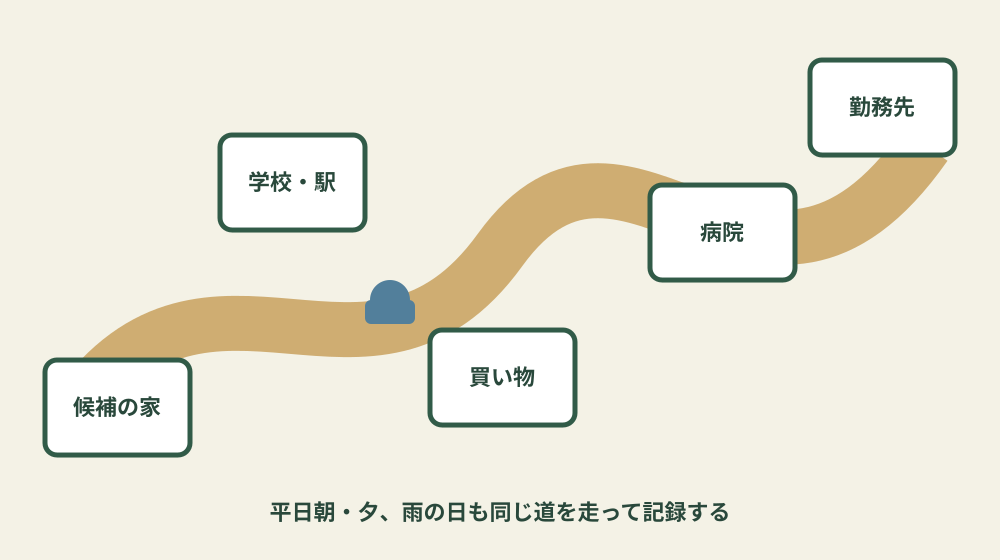
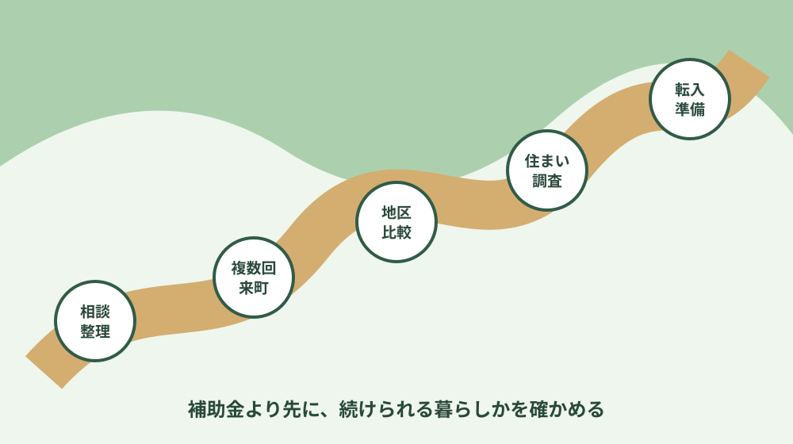

森町移住完全ガイド｜仕事・子育て・交通・住まい
森町への移住は、補助金や物件写真から決めるのではなく、仕事、学校、通院、買い物、交通、防災、住まいを一週間の暮らしとしてつなげて確かめます。森、一宮、飯田、園田、天方、三倉では生活動線が同じではありません。オンライン相談で問いを整理し、季節と時間帯を変えて複数回訪れ、家族が続けられる暮らしかを判断します。
1. 森町移住は、家を探す前に一週間の暮らしを書く
移住を考え始めたら、最初の作業は物件検索ではありません。家族それぞれの勤務日、出勤時刻、学校や保育、定期通院、買い物、介護、趣味、地域外へ出る用事を一週間の表にします。現在の暮らしで徒歩や鉄道だけで済んでいる用事が、森町の候補地では車や送迎になるかもしれません。反対に、駅や勤務先との位置関係によっては公共交通を組み合わせられる場合もあります。
次に、「変えてもよい条件」と「変えられない条件」を分けます。部屋数や庭の広さは調整できても、勤務開始時刻、子どもの学年、継続治療、家族の運転可否は簡単に変えられません。優先順位を家族で言葉にすると、景色の良さや物件価格だけに引っ張られず、候補を絞れます。
森町公式の移住定住手続きページは、移住相談窓口や民間の不動産業者へ話を聞き、地域との相性を見極め、一度だけでなく何度か足を運んで四季の様子を確かめるよう案内しています。これは重要な確認手順です。旅行で訪れた晴れた休日と、雨の平日朝、冬の夕方では、道路や買い物、家の寒さ、地域の音の感じ方が変わります。
移住の目的も一文にします。「自然の近くで暮らしたい」だけでなく、「週三日は磐田へ通勤し、小学生が徒歩で通い、月一回は掛川の病院へ行ける範囲」のように具体化します。目的が曖昧なまま物件を増やすと、比較項目が毎回変わります。条件表は、町の相談窓口へ質問するときにも役立ちます。
完全移住だけが選択肢ではありません。森町公式は二地域居住の取組も案内しています。現在の拠点をすぐ手放さず、一定期間を森町で過ごし、仕事、教育、住まいを試す方法が合う家庭もあります。費用と移動負担が増えるため万人向けではありませんが、戻れない決断を急がない選択肢として比較します。
2. 六地区は名前ではなく生活条件で比べる
森地区、一宮地区、飯田地区、園田地区、天方地区、三倉地区は、同じ町内でも駅、幹線道路、標高、河川や斜面、生活施設への距離が異なります。「中心部」「山間部」という二分だけでも足りません。候補住所ごとに、道路、公共交通、学校、医療、買い物、災害リスク、通信、除草や雪・落葉などの管理条件を確認します。
森地区を候補にするときは、役場や生活施設への近さだけでなく、河川との位置、高低差、通りの交通量、駐車を見ます。一宮地区では、天竜浜名湖鉄道や地域交通、小國神社周辺の来訪が暮らしへどう影響するかを時間帯別に見ます。観光で訪れた印象と、毎日生活する道路の条件は分けて考えます。
飯田・園田地区では、学校、駅、幹線道路、茶畑や農地との隣接を候補地ごとに確認します。農地の近くで暮らすことは景観だけでなく、農作業の音、時間帯、土や水、通行への理解も含みます。敷地に農地が付く物件なら、住宅と同じ感覚で取得・用途変更を決めず、農業委員会へ相談します。
天方・三倉地区では、山里の環境と引き換えに、道路、斜面、倒木、通行止め時の代替経路、買い物・通院の距離、空き家管理を具体的に見ます。通信状況は事業者のエリア図だけでなく、使う端末と建物内で確認します。家が広い場合、屋根、庭、山際、水路の維持範囲も増えます。
地区ページは入口です。森地区、一宮地区、飯田地区、園田地区、天方地区、三倉地区を読み、最後は住所候補で現地確認します。地区名だけを差し替えた結論にはしません。

3. 仕事・交通・買い物・医療を一続きで試す
仕事は求人の有無だけでなく、働き方と移動を確認します。町内勤務、近隣市への車通勤、天竜浜名湖鉄道を使う通勤、在宅勤務では住まいの条件が変わります。車通勤なら平日朝夕の渋滞、駐車費用、雨天時を試します。鉄道なら駅までの移動、乗換、最終の帰宅時間まで一続きで時刻表を見ます。
在宅勤務は「インターネットがつながる」だけで十分とは限りません。必要な回線、上り下りの速度、オンライン会議、携帯電話の予備回線、停電時の対応、仕事部屋の暑さ寒さを確認します。内見時に速度を測れるか、回線工事が必要か、賃貸で工事承諾が得られるかも確認します。
買い物は店舗名の一覧より、曜日と時間で考えます。食品、日用品、衣料、家電、薬、宅配の受取りを分け、候補地からの距離を見ます。仕事帰りに寄れるか、家族が車を使っている時間はどうするか、高齢になって運転を控えた場合はどうするかまで考えます。森町の買い物と生活動線で確認表を作れます。
医療は、近くに病院があるかだけでなく、家族が必要な診療科、受付時間、夜間休日、薬局、広域の医療機関への経路を確認します。定期通院がある人は、実際の予約時刻に合わせて候補地から移動します。子どもの急病時は子どもの救急相談、夜間休日は夜間・休日の受診先を事前に家族で共有します。
一台の車を家族で共有する場合、送迎が重なる時間を表にします。二台に増やす場合は、購入、保険、税、燃料、車検、駐車場所を住居費へ加えます。公共交通を使えるかどうかは、路線が存在するだけでなく、自宅から停留所、便、予約、帰宅時刻まで確認します。森町の公共交通ガイドを最新公式時刻表と合わせて使います。
生活動線を試す日は、移動時間だけでなく「誰が運転したか」「駐車しやすいか」「子どもや高齢者が乗り降りできるか」「帰宅後に家事を続けられるか」を記録します。片道が短くても、送迎を一日に何度も繰り返せば負担になります。反対に、用事を同じ方向へまとめられるなら、車の走行回数を減らせます。移住後の理想ではなく、忙しい日の最低限の動きで比べます。
移動費は燃料だけではありません。車両の追加、保険、冬や雨の備え、駅の駐輪、家族の送迎時間も含めます。在宅勤務の日が増減した場合、子どもが進学した場合、親の通院が始まった場合の三つの将来像も試算します。現在は成立する生活動線が、五年後にも無理なく続くかを家族で話します。

4. 子育て・学校・地域との関わりを転入前に聞く
子育て世帯は、保育園・幼稚園、小中学校、放課後、医療、送迎、保護者の働き方をまとめて確認します。施設が町内にあることと、希望時期に利用できることは別です。年齢、申込時期、空き、必要書類、慣らし保育、送迎時間を担当窓口へ確認します。
学校は、住所候補と通学区域を確認します。距離だけでなく、通学路、集合、坂道、雨天、帰宅後の居場所を見ます。転校を伴う場合は、現在の学校と森町側の学校教育窓口へ時期と書類を確認します。森町の学区と転校手続きを早めに読みます。
地域との関わりは、移住者だから特別というより、その地区で生活を続ける条件の一つです。自治会、行事、防災、草刈りなどの情報は物件資料だけでは分からないことがあります。加入方法、役割、年間予定を、所有者や地区の案内、町の相談窓口から確認します。参加できない事情がある場合も、事前に相談方法を聞きます。
子どもにとっても、自然環境が豊かという一言だけでは判断できません。遊ぶ場所、図書館や文化施設、習い事、友人宅への移動、進学後の通学を年齢ごとに想像します。親が毎回送迎する前提なら、その時間を平日の予定へ入れます。良い面と負担を同じ表に載せることが、家族の納得につながります。
5. 賃貸・空き家・土地は暮らしを試してから選ぶ
初めて森町で暮らす人は、すぐ購入する以外に、賃貸や二地域居住で生活を試す方法があります。物件の選択肢、家族の学校・仕事、引っ越し回数、初期費用を比較します。「賃貸が見つからないから購入」「安い空き家があるから移住」という順序にすると、土地条件や改修費を後から知ることがあります。
町営住宅、民間賃貸、空き家バンクの賃貸では、募集、審査、契約の仕組みが違います。森町で賃貸を探す手順で、収入条件、掲載時点、駐車、通勤を分けて確認します。掲載件数や家賃は時期により変わるため、過去の数字を相場として固定しません。
空き家バンクは、町が物件情報を登録・公開する制度です。町は交渉、契約、仲介、管理を行いません。見学には利用申込が必要で、公開ページでは優先交渉権の順序も案内されています。森町空き家・空き地バンク完全ガイドで、所有者側と利用希望者側の手順を確認します。
空き家や中古住宅は、写真の雰囲気だけで決めません。雨漏り、床、基礎、給排水、浄化槽、電気、残置物、接道、境界、擁壁、農地、災害リスクを確認します。購入価格が低くても、改修、車、庭、通勤の費用を加えると家計が変わります。見積書は工事範囲と追加条件まで読みます。
土地から探す場合は、地番、地目、接道、都市計画、上下水道、排水、農地、高低差、造成、防災を確認します。更地に見えることと住宅を建てられることは同じではありません。所在地と利用目的を持って町の所管窓口、建築士、必要な専門家へ確認します。森町の不動産・住まい総合ガイドに確認順序があります。
6. 相談から転入までを六段階で進める
第一段階は家族条件の整理です。仕事、学校、医療、運転、予算、希望時期を書きます。第二段階は町公式の移住定住サイトと相談窓口です。オンライン相談を使う場合も、質問を一文ずつ用意します。分からないことを隠さず、どの地区や住まいが未定かを伝えます。
第三段階は複数回来町です。候補を六地区から絞り、平日朝、夕方、休日、雨の日など条件を変えます。駅、停留所、学校、病院、買い物、避難先を回ります。宿泊できる場合は夜の音、照明、通信、気温も確認します。地域の私有地へ無断で入らず、写真撮影は人や家を特定しないよう配慮します。
第四段階は仕事・学校・住まいの具体化です。内定、在宅勤務条件、保育・学校の時期、賃貸や購入の契約条件を並行して確認します。どれか一つだけ先に確定すると、他の条件が合わない場合があります。申請前の契約や着手が補助の対象外になる制度もあるため、順番を担当課へ確認します。
第五段階は物件調査と資金です。建物、土地、登記、道路、農地、防災、修繕を確認し、初期費用と年額を計算します。住宅ローンや保険は金融機関等へ相談します。契約内容で分からない言葉を残さず、重要な説明は家族も聞きます。
第六段階は転入と生活開始です。転入届、水道、ごみ、学校、保険、車、犬など、世帯に必要な手続きを一覧にします。引っ越しが決まった後の順序と転入後の手続きで期限を確認します。災害用の連絡と避難先も初週に共有します。
段階ごとに「ここまでに分からなければ一度止める」という条件を決めます。勤務条件が確定しない、学校の時期が合わない、修繕費が予算を超える、農地や道路の確認が終わらない場合は、契約日を優先して進めません。保留は失敗ではなく、後戻りできる判断を残すための工程です。確認が取れた項目、取れない項目、代替案を家族で共有します。
転入直後は、新しい手続きと片付けが重なります。初月に必要な窓口、三か月以内に確認する設備、季節が変わってから見る家の状態を分けます。近隣への挨拶や地区の案内は、所有者・貸主や自治会へ時期を聞きます。分からない地域の慣行を想像で埋めず、できない事情がある場合は早めに相談します。

7. 森町移住でよくある質問
森町移住は何から始めればよいですか
家を探す前に、家族の仕事・学校・通院・買い物の条件を書き、町公式の移住相談で確認事項を整理します。その後、複数回訪れて候補地区の生活動線を試します。
森町では車がないと暮らせませんか
一律には決められません。候補地から駅・停留所までの移動、通勤通学、買い物、通院、帰宅時刻を一週間の予定に当てはめます。家族で車を共有する場合や将来運転を控える場合も試算します。
補助金を使えるか先に知りたいです
制度ごとに転入元、就業、年齢、所得、契約・申請時期などの条件があります。契約、購入、工事を始める前に定住推進課へ対象と申請順を確認します。制度名だけで家計へ組み込まないようにします。
六地区はどのように選べばよいですか
地区の印象ではなく、勤務先、学校、医療、買い物、公共交通、防災、土地・建物管理の実動線を住所候補ごとに比べます。平日朝夕と雨の日を含めて現地を確認します。
空き家バンクの物件ならすぐ住めますか
掲載は居住可能性や修繕費を保証するものではありません。利用申込後の見学で建物、設備、接道、境界、農地、災害リスクを確認し、必要なら専門家へ調査を依頼します。
8. 今日できる移住準備・公式情報源
今日できることは、家族の一週間と変えられない条件を一枚にまとめ、町の移住相談へ聞く質問を五つ書くことです。来町日は観光予定だけで埋めず、候補地から勤務先、学校、病院、買い物先を回る時間を取ります。確認したページ、日付、担当窓口、回答、次にすることを同じノートへ残します。
来町後は「良かった・悪かった」だけでなく、確認できた事実、まだ分からないこと、家族ごとの感想を三列に分けます。感想が違うときは多数決を急がず、別の季節や時間帯でもう一度確かめます。移住時期を延期する、候補地区を変える、まず賃貸で試すという判断も、確認の結果として正当な選択です。
関連する新しい確認ガイド
このページでまとめて確認する項目
同じ手続きや確認順序で解決できる質問を、ページを分けずにまとめています。
- 移住 補助金
- 生活 基本情報
- 子育て 環境
最終確認日：2026-08-06 ／ 補助、募集、交通、物件は変わります。契約や転入前に森町公式と各運営者へ確認してください。